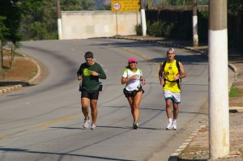
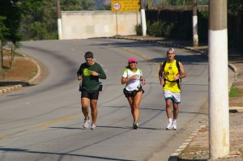

vamo, vamo, vamo…
Ex-sedentário
Segundo Treino
27 years
by Andrea Carla
in Ex-sedentário
Ainda sem tomar banho, vim correndo escrever aqui…hehehe…Depois de resolver “assuntos”, resolvi passar em casa, trocar d roupa e treinar.
Fui a cidade da criança em São Caetano, enquanto as cçs brincavam eu caminhei em passos rápidos e contÍnuos, exatos 30′ …dessa vez não corri. estava com muita falta d ar…mas estou mega feliz d ter andado hoje.
Não treinei ontem…ah, e o treino de terça, meu primeiro, foi na Av. Kennedy em São Caetano…
Alex, t amo…

Total Xeipe – Polixopi
87 years
by Alecão
in Ex-sedentário

Total Xeipe é um aparelho que faz com que você emagreça sem fazer nada. Fazia parte de um projeto da NASA, onde… INTERROMPEMOS ESTE ARTIGO PARA LHE AVISAR: Se você ligar agora! Estará ganhando inteiramente grátis não um, mas dois frascos do milagroso gel redutor! …originalmente, seria um aparelho de tortura usado pelos soldados estadunidenses no Iraque, e punir os rebeldes assassinos. Após inúmeras pesquisas e testes, descobriram que o aparelho só funcionava para tremer, causando uma leve cócegas na vÍtima. A ideia seria “enterrar” o projeto. Mas Dan Brown descobriu, e publicou tudo no livro O Código Tremelique, numa alusão a utilidade do produto.
Sucesso
Total Shape tem marcas incrÍveis:
- 1,7Â mol de produtos vendidos.
- 1.001 dias sem trocar a bateria.
- A Total Xeipe compras por telefone recebe mais telefonemas, que o Google recebe de acessos.
- A Total Xeipe compras pela internet recebe o dobro de visitas que o Google, e Yahoo juntos.
- Faz você perder 5Kg por dia (enquanto come sorvete).
- Tamanha a irradiação de seu princÍpio muscular que, se colocado no dedinho do pé, deixa o couro cabeludo musculoso.
- Um dia (inteiro) na academia equivale a 50 fentossegundos no Total Xeipe.
- Total Xeipe não pode ser usado no avião. Vibra em tal frequência que atrapalha o sinal do rádio.
- Você pode usar Total Xeipe enquanto assiste televisão, faz cocô, toma leite, e muito mais!
Mas atenção
Espere. Se você ligar nos próximos 30 segundos (ou anos, tanto faz) nós lhe enviaremos forma gratuÍta, totalmente sem custo, grátis, mais um lindo e revolucionário Total Xeipe (e inteiramente grátis, apenas com o custo adicional de 1500% no frete).
Testemunho
Minha vida mudou completamente a partir do momento que comecei a usar o Total Xeipe. Suas cócegas diárias fizeram meu corpo transformar conforme pode se ver nas fotos do antes e do depois:


Obrigado Polixopi por ter criado este maravilhoso produto!
Meu primeiro treino
87 years
by Andrea Carla
in Ex-sedentário
Primeiro vou me apresentar: Sou esposa do Alex e prima torta do Cláudião… Hoje acordei sem saber q estaria disposta a treinar e quem me incentivou foi o Alex. Comecei andando bem,mas na hora d correr tive muita falta d ar, tenho bronquite, mas não acho q isso seja um empecilho para praticar esportes. Andei 23 ‘ e corri 3 ‘ .Gostei e pretendo continuar. Tenho objetivo de deixar d ser sedentária e participar das corridas ao lado d vcs.
Um ano da primeira prova de Alex e Claudio (comemorando em grande estilo)
287 years
by Alecão
in Ex-sedentário
Este é um post elaborado a quatro mãos (do Alex e do Claudio).

Faz 1 ano em que eu (Alex) aceitei participar da minha primeira corrida, na época a idéia partiu de mim e o Claudio pirou ao escutar a idéia. Naquela corrida corremos lado-a-lado e com certeza sem ele não teria completado a prova.
Desta vez a coisa foi diferente. Claudião se preparou para encarar a maratona de Curitiba e eu quis fazer um Deja-vu correndo novamente a Samsung 10K e desta vez sozinho.
Falando nisso, todas as corridas que eu participei, tive companhia e nessa em particular eu corri sozinho… Portanto, tive que contar muito com a força de vontade.
Escrevendo esta introdução fiquei imaginando como iria fazer um texto a quatro mãos, sendo que não estamos juntos. Então eu imaginei… Escrevo minha parte e depois o Claudio acrescenta a dele. E como fazer isso? A resposta é colocando os horários e depois intercalando…

Deus! Escrever agora, emocionado, fica mais complicado.
A data realmente pedia uma comemoração especial. Afinal, um ano da primeira prova oficial depois de nossa resolução de parar de reclamar da má sorte/saúde e literalmente corrermos para o abraço de uma vida feliz!
Partamos então para a parte Parananense da comemoração, porque eu não comemorei sozinho em Curitiba, nosso idolo do Blog, o Thiago, esteve comigo na aventura. E que aventura:
21:45 (Claudio) – Sábado 20.11. -Thiago e eu estamos na Rodoviária do Tiete, aguardando o horário de partida do ônibus que nos conduziria até Curitiba.

02:30 (Alex) – Acordei, sem sono, maldita ansiedade, tentei dormir novamente sem condições. Mesmo assim fiquei deitado na cama até o relógio tocá-se.
04:30 (Claudio)– Domingo 21.11 –  Thiago e eu somos acordados pela luz do ônibus, que anunciava a chegada à rodoviária de Curitiba. Uma troca de roupas no banheiro da rodoviária e um café pré-corrida com torrada (seca) e gatorade.
05:00 (Alex) – Saà da cama e procurando roupa, vesti dei tchau para Andrea e sai pensando… Por que fui aceitar essa idéia???
05:00 (Claudio) – Como ainda faltavam duas horas para a corrida, decidimos caminhar até a largada. Afinal, só encontrarÍamos o Paulo Motta com os nossos kits ás 06:15. Mas devido a informações erradas acabamos indo na direção contrária. Eram 05:50 quando decidimos tomar um ônibus ou táxi para a largada, mas ônibus não passavam e os táxis que passavam, não paravam. Bateu-me desespero, mas finalmente um táxi parou e em 07 minutos nos deixou na arena da corrida.
06:10 (Alex) – Cheguei na Assembléia legislativa, achei uma vaguinha do lado… Ufa, era minha maior preocupação. Já estava trocado. Só faltava esperar.
06:35 (Claudio) – O Paulo Motta chega com os nossos kits. No mesmo momento também aparece a Dani Dato e o seu anônimo esposo, Vinicius (que também correu sua primeira prova longa) e Enio.

07:00 (Claudio) – Dada a largada Thiago, Paulo e eu ainda ainda estávamos procurando o acesso para a pista. E uma supresa. O Enio disse que correria comigo, que em razão de um problema ainda não curado na lombar correria apenas 10kms (disse isso para me enganar) do meu lado.
Apesar da sensacional e emocionante companhia do Enio foi bastante estranho correr os primeiros 5km em último lugar. Thiago e Paulo seguiam um pouco a frente.
07:30 (Alex) – E como esperei… andei para um lado, andei para outro. Fiquei procurando os conhecidos e nada. Desisti e fui para a largada. O meu setor (preto) era exatamente do lado do Trio elétrico. No qual teve aquecimento, foi bem legal isso.


8:00 (Alex) – Largada!, começou o anda-anda e liguei para o Claudio… Ele já estava correndo desde as 7:00. Desejei boa sorte e ele a mim. Senti ali a presença dele e sabia que poderia encarar o desafio. Vamo embora! O inÍcio é pouco tumultuado comparado com o ano passado (bem pior). Encarar essa torcida do Cruzeiro não é fácil (né Fábio? 🙂 ). Falando nisso o Fábio comentou do tumulto do inÍcio… Saiba que no ano passado a coisa foi bem pior, porque os camisas brancas (caminhantes) estavam misturados a torcida do cruzeiro. Comecei bem com o rÍtimo de 7:30 por Km (primeiro e segundo quilômetros).


8:00 (Claudio) –O telefone toca e era o Alecão dizendo que estava começando a correr. Naquele momento já fiquei emocionado, era, enfim, o começo da nossa comemoração. Corrida vai, corrida segue, só encaixei o passo e a respiração por volta do km 11, quando já tinhamos passado por postos de hidratação bem bacanas.

8:30 (Alex) – Já estou no quarto quilômetro, passando do lado do Obelisco. A sombrinha das árvores acabaram (na República do LÍbano). Fiquei com saudade da sombra… e já avistei a Rubem Berta… Lembrei que no ano passado, foi bem neste ponto que tive hiper-ventilação. No ano passado o circuito era diferente, o Obelisco já era no quinto quilômetro. Bateu a lembrança e também já imaginei… Tem mais subida pelo caminho (era 1 Km a mais na Rubem Berta). Decidi que o objetivo era terminar e diminuà o passo. Fiz o terceiro Km em 8:30 e o quarto a 9:00… Começaram as subidas da Rubem Berta… socorro. “Anda Alex”, “Anda Alex” era a voz que vinha de dentro. Comecei a caminhar rápido. E não era só eu. Tinha muita gente partindo para a mesma idéia. Corria na descida e NOOOOSSA uma subida interminável e caminhei novamente. O quinto e o sexto quilômetro foram feitos a 10:00 cada.
9:00 (Alex) – Sétimo quilômetro, lembrei que no ano passado eu esbocei uma reação aqui. Encarei que iria recuperar o tempo das caminhadas… meta fixa na cabeça… “Quero terminar em 1 hora e meia”. E fui correndo quando dava. Nessa hora vi que não era um dos últimos e comecei a ficar feliz… Não sou tão lerdo assim.


O Sétimo ainda tinha subidas e fiz com 9:00 e o oitavo e nono a 8:30 e apenas pensava… Vou conseguir, vou conseguir…
9:30 (Alex) – Estou no décimo quilômetro e apareceram placas com “Faltam 800m”, “Faltam 600m”, “Faltam 400m” uma alegria geral foi tomando conta, sombra de árvores voltaram… Tirei o boné:
 Nessa hora, avistei um senhor já de idade dando um sprint e virando a curva. Não me aguentei e disparei, quase atropelei 3 mulheres que corriam lado a lado e fui a busca do senhor. Uhuuuuuu. Animal… (veja o vÍdeo da chegada)
Nessa hora, avistei um senhor já de idade dando um sprint e virando a curva. Não me aguentei e disparei, quase atropelei 3 mulheres que corriam lado a lado e fui a busca do senhor. Uhuuuuuu. Animal… (veja o vÍdeo da chegada)
Liguei para o Claudio… Gritei: “Claudio fiz em uma hora e vinte seis…” E escutei a vibração dele do outro lado da linha… Ele vibrava, “você foi muito bem…” e emendou “Estou no Km 21. A corrida pra mim começa agora”. Fiquei muito emocionado nesse momento. Obrigadão Claudio, por estar comigo e vibrar comigo mesmo quando eu estou correndo sozinho. O tempo oficial marcou os mesmos 1:26:00 (arredondando).


Na sequência liguei para a Moça (Andrea) que vibrou muito junto com as crianças. Se no ano passado a frase que repeti no post foi “Consegui, Consegui, Consegui”…. A deste ano é “Perseverei, Perseverei, Perseverei” e Vamo, vamo, vamo… Claudião continua agora…
9:30 (Claudio) –O telefone toca novamente. Era o Alecão ainda ofegante dizendo que havia terminado a prova em 01h26min. Fui tomado por uma emoção tão grande que eu berrava muito alto na rua. Comecei a chorar e o Enio, sempre comigo,  lembrou-me de  que ainda tinhamos 21 kms pela frente. Foi inevitável não acelerar naquela hora. A primeira parte da prova foi muito linda (sem cansaço a paisagem fica mais agradável) Havia árvores cujas flores pareciam girassóis.


10:30 (Claudio) – O sol aparece com todo seu explendor. No km 28, aproximadamente uma caminhada rápida na subida, seguida de um trote contÍnuo até o km 31, a partir de onde as caminhadas ficaram recorrentes, mas firmes. Passamos pelo Thiago já voltando embalado e logo em seguida pelo Paulo Motta. Num dado momento eu estou caminhando sem ritmo e decido bater palmas para ditar o ritmo da caminhada, o que ajudou bastante porque a caminhada virava corrida muitas vezes.


A esta altura eu já sabia que atingiria meu objetivo de completar a maratona em bom estado fÍsico e dentro do tempo regumentar. Já fazia alguma festa, mas sem dispensar nenhuma ajuda oferecida pela estrutura da prova.


Depois do km 36 o Enio tentava arrancar de mim um corredor forte, mas única coisa forte que encontrava era caminhada (menos mal). E, de quando em vez, um trote.

Caminhando e trotando eu cometi uma heresia em maratona. Parei na placa de 40km, quando todos ganham força e aceleram, mas acheia-a tão linda. Afinal, eu nunca havia sequer visto uma placa de 4okm, assim, tão  de perto.


Depois dessa placa eu queria chegar logo, mas as penas não respondiam ao comando da ansiedade, o que resultada em tiros de 25 metros seguidas de caminhadas de 200. O Enio me apontava o pórtico da chegada, mas ele estava muito longe e no alto de uma subida. O Paulo Motta já tinha voltado para me rebocar e seguimos os três, mas sprint mesmo somente nos ultimos 100 metros. Eu ainda consegui fazer uma graça. Parei diante do tapete e pulei em cada faixa (três) com os pés juntos.
Eu havia completado a prova. E no maravilhoso tempo de 05H21Min01Seg.
O Paulo Motta, que no mês de agosto me presenteou com a inscrição da corrida e todo incentivo de três meses, deu-me um caloroso abraço. Nessa hora eu me emocionei. DelÍcia que eu desejava experimentar há muito tempo. E eu gostei disso. Eu fiz uma loucura planejada e em, apartado, farei um post especial para agradecer a todos que me incentivaram e que me foram decisivos na fase destinada a preparar meu corpo para suportar a brincadeira.
O Enio foi sensacional. Sacrificou a corrida dele para estar comigo durante todo o tempo, incentivando-me sempre e vibrando comigo. Jamais esquecerei isto meu amigo. Devo-lhe um rim.
E o Thiago? Este terminnou voando e o perdemos. Depois que o encontramos que ele esclareceu que após um descanso foi nos esperar na chegada, quando já havÍamos passado. Liguei para a Mari e, lógico, para o Alecão, o fecho de nossa especial comemoração.
Mas a maratona da viagem ainda não havia terminado. Conheci o veloz Baleias Tinil, que me recebeu de braços e coração abertos. Um verdadeira festa Baleias.

Quando encontramos o Thiago, vimos novamente Tinil, desta vez acompanhado do divertidÍssimo Julio Cordeiro. E já rolou ali mesmo uma comemoração com Gatorade Espumante, como chamou o Julio, em seu blog.
Não posso deixar de comentar que Thiago e eu tomamos banho no chuveiro fornecido pela organização da prova. Num container. Um monte de magricelas pelados. Senti-me uma panceta no meio do charque. Inusitado, para dizer o mÍnimo. Mas aquela altura TUDO ERA FESTA.
O Paulo até adiou a ida dele ao amigo que o hospedava, para ficar para o almoço/cervejada, que contou com a presença também do Ésio Cursino.

Thiago e eu saimos as pressas para a rodoviária. Eu estava muito feliz e ligeiramente bêbado, o que tornou tudo mais divertido. Assim que o ônibus partiu fui ao banheiro e nas ultimas 6 poltronas haviam maratonistas (legÍtimos). Fiquei ainda quase duas horas em pé no corredor do ônibus proseando. A sensação era de que o ônibus se deslocava para frente e girando ao mesmo tempo no próprio eixo.
A nossa comemoração de um ano foi sensacional. Justo durante o perÍodo em que me dediquei aos treinos longos e a dieta (tive de perder 8 quilos que estavam atrapalhando muito), o Alecão também se superou, E MUITO, vencendo barreiras quase intransponÍveis para fazer bonito na equipe Taeq durante a Maratona de Revezamento Pão de Açucar. Emagreceu 12 quilos e fez uma lindeza de prova comemorativa. Diminuiu vinte minutos daquela prova e com um fantástico sprint.
O Alex é o meu herói e parceiro de toda uma existência. É também o Herói deste blog, porque segue feliz e aceitando suas limitações mesmo tendo no encalço o mala do Claudião. Mas sempre contando também com Thiago, nosso Ídolo, incentivador e parceiro até nas roubadas mais incrÍveis, como este bate-e-volta para Curitiba. Valeu Thiagão!!!! Cadê o Guilherme Maio? Gui, eu também tenho meu “mestre Thiago”.
(Alex) E tudo começou assim:

Está chegando a hora da estréia….
97 years
by Ana Shibata
in Ex-sedentário
                          TIC…….TAC……….TIC………..TAC…………..
 Â
    O relógio não para e o grande dia para a estréia do nosso Ex-Sendentário Claudião em sua PRIMEIRA Maratona está chegando!!!!
     Os sentimentos antes, durante e pós prova ele mesmo poderá relatar…….. e nós aqui nos bastidores estamos na maior torcida…. Eu que o diga, já que estou de molho, levando a vida de pernas para o ar.
    A lição foi feita, a força de vontade e os treinos nos meses que antecederam servirão de alicerce para esse grande momento, agora olhar para a frente, segurar os batimentos do coração para o momento certo e pé na tábua……..
   Claudião, a “famÍlia” e os amigos  ficarão  por aqui unidos em pensamento ao seu grande momento.
 Â
   É isso ai………. VAMO ……VAMO……VAMO……….
 Â
       GOOOOOOOOOOOOOOOOOD LUCKKKKKKKKKKKKKKK,
Â
                BOOOOOOOOOOOOOOOOAAAAAAAA SORTEEEEEEEEEEEEEEEEEE
Â
                              APROVEITE ESSE MOMENTO!!!!!!!!!!
Â
Â
                              Â
Tartaruga de elite
47 years
by Alecão
in Ex-sedentário
Na equipe dos blogueiros Taeq, tinha a Marisa muito bem humorada que deu o tÍtulo “Tartaruga de Elite” a um de seus posts. Segundo ela, éramos importantes por termos sido escolhidos, mas éramos lentos. Ao ver minha performance de 6 km em 1 hora, lembrei do fato.
Pois então. Segunda, feriadão, a Andrea (minha mulher) precisava atender a uma cliente. E me sugeriu treinar enquanto ela atendia. E era para os lados do Demarchi em São Bernardo. Treino em ambiente diferente sempre é legal. E lá fui eu. Adorei o empurrãozinho, principalmente porque fazia 2 semanas que não treinava.
Para mim tinhamos planos com algumas subidas e descidas, mas ao ver a altimetria do percurso… Não tinha planos…  🙂
Os tempos foram: 20:06 correndo, 4:52 andando subida, 28:33 correndo, 7:01 subidão andando. Total de 1 hora.


")
Sobe morro, desce morro (Trópico de Capricórnio com amigos)
127 years
by Claudião
in Ex-sedentário
 Â
Â
Faz muito tempo que não relato treino. Mas o de hoje merece registro, porque foi especial demais. Não que os últimos não tenham sido. Mas o de hoje, mais do que treino-objetivo, o objetivo de hoje foi aproveitar as maravilhosas companhia de amigos, desfrutar de lugar novo para correr e altamente desafiador.
Um percurso de 9km muito bonito e desafiador, veja a encrenca cliclando aqui.
Corri com o Fabão e com a Elis. E do nada (a Elis fez surpresa) apareceu a Dona D. Eu me diverti muito, mas confesso que se não fosse pelas companhias não se sei se teria subido as tres últimas subidas. Enquanto meus pares corriam eretos minha cabeça já pendia a frente. Mas no meu peito havia muita satisfação.
Vejam as fotos e mais versões sobre o mesmo mega treino, que, para mim, valeu mais do que uma prova oficial. Foi uma grande prova de aventura e amizade. Estou curioso para saber como as minhas pernas reagirão amanhã pela manhã. Mas a felicidade instalada no meu peito ficará por um bom tempo. Obrigado amigos.
Vejam o Blog do Fabão, depois o Blog da Dona D e vejam mais no Blog da Elis.
Lá tem fotos muito legais que pretendo colar aqui também.
Foram os 18kms mais intensos que já corri. Intensos em visual, dificuldade e prazer.
Resultado da reavaliação do ortopedista
77 years
by Ana Shibata
in Ex-sedentário

           Depois do acidente fiquei literalmente de molho lendo e assistindo alguns programas de TV. A muleta que me emprestaram era tamanho G o que deixou alguns hematomas embaixo do braço, enfim, nesta fase tudo faz parte.
           Na quarta meu tornozelo ainda estava inchado. Tratei de marcar ortopedista rapidamente para reavaliação, ainda bem que consegui pela hora do almoço, mas se precisasse ficar plantada no consultório não haveria problemas, precisava era saber o agora  Â- apesar de já ter rodado o Dr. Google, restava a ressonância magnética para saber o estado do tornozelo e somente com esse resultado saberÍamos a extensão da lesão.
           Realmente, foi pedido RM e também foi explicado que dependendo da extensão seria solicitado fisioterapia, mas tudo depois da RM, foi trocado o antiinflamatório e usar imediatamente Robofoot ( uma bota monstrenga mais paracido ROBOCOP! — ah, a da fotinho) para ficar com o pé num ângulo de 90º, gelo e continuar com o repouso e perna para o alto.
           Ainda bem que moro em Sampa onde a cidade não para e consegui marcar a RM para o mesmo dia as 23 hs (uma clÍnica que trabalha 24 hs, bárbaro demais esse tipo de atendimento). Fiz a RM e pedi urgência na entrega do resultado para retorno a ortopedista.
           Agora novo embate, se ficar em repouso absoluto com a perna elevada calçando o bendito robofoot já era um transtorno, não há idéia de como seja dormir com ele!! Preguei os olhos de sono e cansaço. Acordei cedo e fiquei na expectativa do dia passar. Um pouco antes do meio-dia fiquei logada no site da clÍnica aguardando o laudo da RM, e também liguei para reforçar o pedido de urgência, obtendo a confirmação de que sairia logo, naquela tarde seria entregue o laudo e imagens.
           O resultado saiu na internet, li e fui procurar o verdadeiro significado dos termos técnicos na internet. Um pouco antes disso, através de e-mail solicitei a ortopedista agendamento do retorno para hoje (05/11) e ela gentilmente respondeu que poderia me encaixar e determinou o horário (na Era da globalização, da tecnologia, as trocas de e-mails, quando é utilizada torna a vida bem mais prática, sem necessidade de telefonar, falar com recepcionista que perguntará ao profissional e depois retornará o chamado ou precisaremos ligar cobrando uma resposta), este canal instantâneo de comunicação já tÍnhamos estabelecido, AGORA, de posse do laudo, lido e relido, enviei e-mail para a orto e dizendo o que realmente estava sentindo: “Dra., estou angustiada, segue abaixo o resultado do laudo: – copiei – ”, não demorou muito a resposta, se eu poderia encontrá-la a tarde.
          Eu não queria acreditar no que li e ouvi sobre a tradução do laudo que uma amiga minha médica havia feito a meu pedido, agora a solicitação de ir ao hospital ainda naquela tarde fez meu mundo cair……. respondi que sim e que faltava apenas a imagem……. aguardei a resposta e como demorou liguei para o hospital, recebi a confirmação de que ela estaria clinicando, rapidamente me vesti, pedi a Melinha aos prantos para ir buscar o resultado e me encontrar no hospital.
           Indo para o hospital meu coração batia mais rápido do que o de uma lebre tentando se salvar para não ser caçada…….. minha amiga aqui do condomÍnio me acompanhou, tentou desviar meus pensamentos…, eu ligando para Melinha para saber onde estava e depois de vários transtornos sobre a entrega do resultado Melinha já estava a caminho. Chegada minha hora a orto me chama e falou sobre ter lido o laudo, me tranqüilizou e explicou os procedimentos, respondeu minhas indagações, enfim, afastou todo aquele monstro que eu havia pintado em minha mente……… já estava mais calma, Melinha entra na sala, a orto examina as imagens, mostra o que aconteceu……..
           Enfim, rompi um ligamento do tornozelo e outro rompimento parcial de alto grau, mostrou-me que estou com água perto das lesões e que se eu não tivesse colocado gelo de imediato e deixado a perna elevada o estrago seria maior, recomendou fisioterapia para a inflamação, não pisar no chão e para isso devo fazer uso de muletas, posso fazer aplicação de bolsa de gelo várias vezes ao dia, utilizar emplasto, gel antiinflamatório e retorno em 3 semanas.
           Depois talvez ela possa liberar alguma atividade fÍsica, mas corrida ou esporte que possa sobrecarregar os pés somente no final do tratamento que não sabemos ainda quando será porque tudo dependerá de como meu organismo reagirá a tudo isso e em quanto tempo.
           Voltei para casa super aliviada, porque cirurgia só se realmente for necessário por ser invasivo e não entende ser o caso neste momento, ela aposta que o tratamento dará resultado.
           Também acho, creio no poder que o nosso corpo tem de se regenerar e para isso é necessário tempo, ainda mais com a extensão da lesão sofrida.
           Fico alguns dias mais em repouso e segunda devo iniciar as sessões de fisio. As corridas em que eu me inscrevi estou repassando para o noro correr em meu lugar……….
           Darei um tempo ao tempo na esperança de não ser um tempo tão grande.
Â
           Bons treinos e boas corridas a todos!!!
Â
Â
Â
SEM TREINOS!!!!
107 years
by Ana Shibata
in Ex-sedentário

           Pensei neste feriadão prolongado em fazer uma caminhada forte e corrida em subida em Atibaia.
           Após ter cumprido meu dever cÍvico fomos para Atibaia, o tempo estava bom e no final da tarde resolvi jogar Badminton com Sy e depois farÍamos  um treino com pequenos tiros na rua.
           Bom, estávamos jogando badminton muito animadas há uns 30 min, rendendo até um bom suador. Avisei Syssi para evitar jogar a cestinha fora da quadra, pois tinha alguns formigueiros, cujas formigas tem uma picada tão ardida e dolorida e eu não queria ser vÍtima delas.
           Num bate e rebate, eis que eu igual à ilustração abaixo ao tentar rebater a cestinha,

pisei em falso no beiral da quadra que tem um desnÍvel para a grama, virei o pé direito e cai por cima!!!!!!!!!!!!! Só gritei de dor e pedi gelo para a Sy. Do jeito que cai fiquei !!!  Como ela demorava em voltar para a quadra, subi mancando, tirei o tênis e tomei uma ducha fria rapidamente. Mas não consegui colocar o pé no chão……. apliquei gelo e a dor continuava intensa. Não teve jeito e pedi ao maridão para me levar ao hospital.
            Até o hospital e enquanto aguardava para ser atendida fiquei com o pé para cima e com gelo no local. Fizemos Raio X, que não acusou nada e como o local estava dolorido o medico resolveu imobilizar o tornozelo por 3 dias, com repouso absoluto pelo mesmo perÍodo, receitou ainda antiinflamatório e analgésico.
           Era tudo que não queria, um simples jogo na quadra causou um repouso forçado e nem sei se poderei correr no próximo final de semana………… ainda sinto dolorido o local.
           Por fim……………. torci o tornozelo no Dia das Bruxas comemorado pelos americanos e ingleses, só restando um pensamento……………….. tinha Bruxa solta no meu pedaço!!!!!!!!!!!!!!!!!!!!
           Estou fazendo tudo que foi recomendado pelo médico para poder voltar logo para as ruas…………. e enquanto isso estou devorando um livro que me emprestaram, aliás, estou adorando-o, cujo assunto é o oposto de minha situação atual…………. o nome do livro?! Nascido para Correr.
Â
           Boa semana e até mais…………….
Â

.jpg "DSC01767 (1024x576)")
.jpg "DSC01909 (1024x576)")
.jpg "DSC01931 (1024x576)")
.jpg "DSCN5635 (1024x768)")
.jpg "DSCN5698 (1024x768)")


{kind=link}
{kind=link}
{kind=link}
{kind=link}
{kind=link}
Últimos comentários